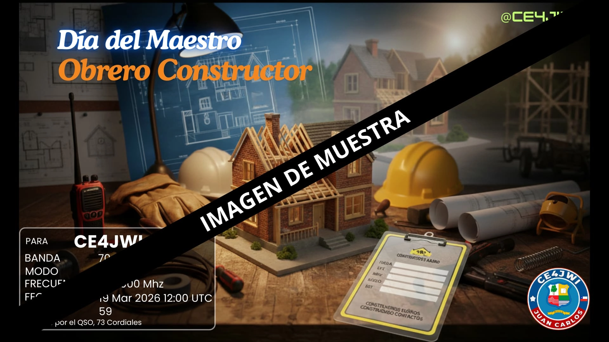

19 de Marzo 2026

Día del Maestro Obrero Constructor
El año 2017 fue publicada en el Diario Oficial la Ley N° 21.048 del Ministerio del Interior, que establece oficialmente el 19 de marzo como el “Día del Maestro Obrero Constructor”. La Facultad de Arquitectura y Urbanismo, que creó hace casi un siglo la Escuela Nocturna para Obreros de la Construcción, saluda y se enorgullece del esfuerzo y dedicación de centenares de obreros y obreras que se han formado en la reconocida ENOC de la U. de Chile.
El profesor Francisco Pino, es arquitecto y docente de la Escuela Nocturna para Obreros de la Construcción (ENOC) explica que la construcción se caracteriza por ser un área donde las herramientas, materiales y técnicas se van adecuando y perfeccionando permanentemente.
“El mundo de la construcción tiene una tendencia a ir optimizando los procesos constructivos, utilizando diferentes estrategias, tales como softwares de modelamientos integrados, control más exhaustivo de los gastos financieros, la prefabricación de elementos o sistemas constructivos y la estandarización de proyectos. Esto último relacionado con procesos globales y con proyectos de gran magnitud. Sin embargo, en procesos de construcción asociados a proyectos de menor escala, aún continúa una manera más tradicional de construcción”.
También destaca que la construcción es un área que se caracteriza por ser un espacio de trabajo donde se desarrollan diferentes oficios, como por ejemplo: albañiles, carpinteros, soldadores, entre otros. “En este sentido, el maestro obrero constructor es un profesional que tiene una gran experiencia en el oficio de la construcción y que ha adquirido habilidades y conocimientos a través de años de trabajo en el campo. Es un experto en su área y es capaz de liderar y supervisar a otros trabajadores en la construcción de edificios y estructuras”.
¿Por qué el 19 de marzo?
La fecha del 19 de marzo coincide con la festividad de San José, patrono de los trabajadores, los carpinteros y los constructores. Por eso, desde mucho antes, esta jornada ya era sentida por los hombres y mujeres de la construcción como un día propio.
Todos aportan, día a día, a levantar viviendas, hospitales, escuelas y caminos que mejoran la vida de todos los chilenos.
El valor del maestro constructor
El maestro obrero constructor es quien guía la faena, lee los planos, organiza las cuadrillas y cuida la seguridad en la obra. Es un oficio que se aprende en el trabajo diario, con experiencia, esfuerzo y compañerismo, y que ha sido clave en el desarrollo de nuestras ciudades.
En Chile existen escuelas nocturnas como la ENOC de la Universidad de Chile, que desde hace décadas permite a los trabajadores de la construcción perfeccionarse y avanzar en su oficio mientras siguen trabajando. Estudiar nunca es tarde.
COMO RADIOAFICIONADO REALIZARÉ ESTA ACTIVIDAD A UN SOLO CONTACTO